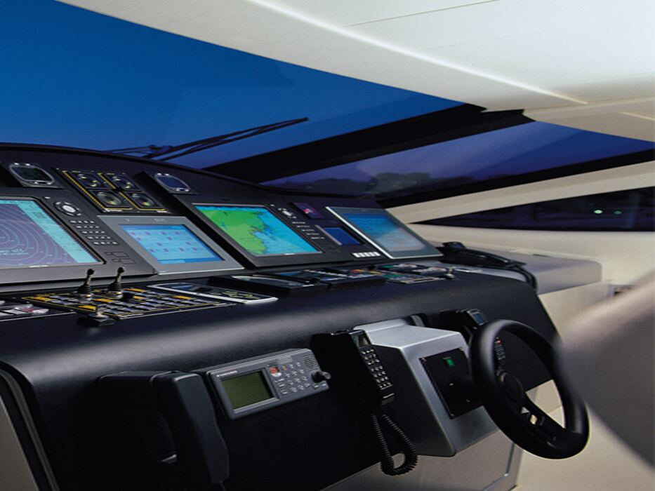
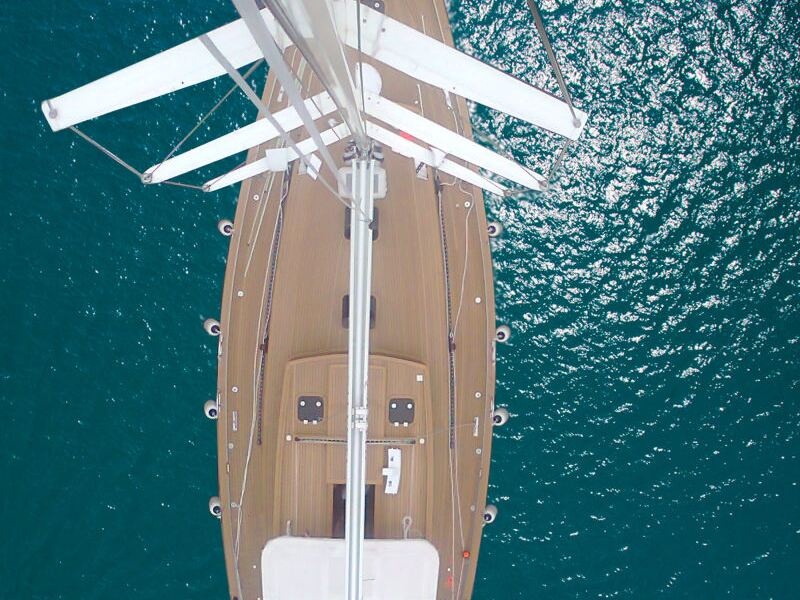
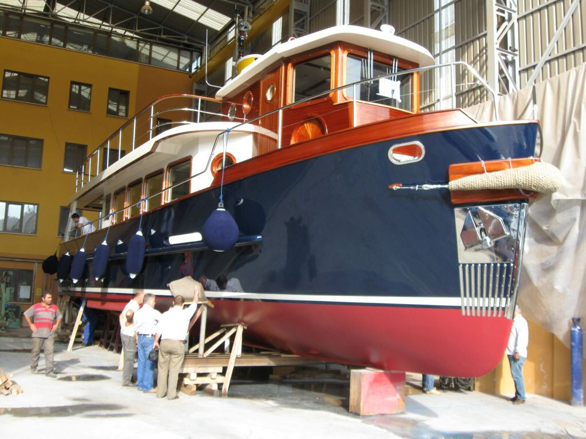

Motor yatlar
Kaptan köşkü konsolları, seyir ekranları, jeneratör ve sahil elektriği sistemleri.
2005'ten bu yana
15 yıllık tecrübenin ardından 2005'te kurulan Pozitif Marin Elektrik, Tuzla'da yat ve teknelerin elektrik ve elektronik sistemleri üzerine çalışıyor.

Hikayemiz
Şirketimiz 15 yıllık tecrübenin ardından, 2005 yılında kurulmuş genç bir firmadır. Denizcilik sektöründe elektrik ve elektronik proje, donatım, bakım-onarım ve servis hizmetleri vermektedir.
Kurulduğumuz günden bu yana ilk hedefimiz, kaliteli hizmeti ilke edinip teknolojiyi takip ederek yat elektrik donanımında projeye özel, hızlı ve güvenli çözümler sunmaktır.
Dünyaca ünlü markaların satış ve servis hizmetlerinde gösterdiğimiz performansla sektörde sağlam ve emin adımlarla ilerliyoruz.
Tuzla'da, Türkiye'nin tersanelerinin yoğunlaştığı bölgede çalışıyoruz. Bir teknenin elektrik sistemini çizim aşamasında planlıyor, panolarını tekneye özel olarak imal ediyor, montajını yapıyor ve teslimden sonra da servisini sürdürüyoruz.
İlkelerimiz
Kaliteli hizmeti bir hedef değil, işin ön koşulu olarak görüyoruz. Her pano, her bağlantı aynı özenle yapılır.
Marin elektrik ve elektronik teknolojisi hızla değişiyor; yeni ürünleri ve yöntemleri yakından izliyoruz.
Hazır kalıplar yerine her teknenin kullanımına ve tüketicilerine göre tasarlanmış sistemler kuruyoruz.
Tekne denizde geçirdiği zaman için var. İşi zamanında, güvenlikten taviz vermeden teslim ediyoruz.
Çalışma şeklimiz
Bir teknenin elektrik sistemini baştan sona aynı ekip üstlenir; her aşama bir öncekinin üzerine kurulur.
Teknenin kullanım amacını, tüketicilerini ve enerji kaynaklarını birlikte belirliyoruz.
Tek hat şemalarını, pano yerleşimlerini ve kablo güzergâhlarını çiziyoruz.
Kumanda, sigorta ve alarm panolarını tekneye özel olarak üretiyoruz.
Altyapıyı kuruyor, cihazları ve panoları yerine bağlıyoruz.
Bütün devreleri tek tek deniyor, sistemi çalışır halde teslim ediyoruz.
Teslimden sonra da bakım, onarım ve yenilemelerde yanınızdayız.
Çalıştığımız tekneler

Kaptan köşkü konsolları, seyir ekranları, jeneratör ve sahil elektriği sistemleri.

Enerji verimliliğinin öne çıktığı akü, şarj ve dağıtım sistemleri; kokpit panelleri.

Teknenin karakterine uygun malzemelerde panolar ve yenilenen elektrik altyapısı.
Yeni bir proje, bir yenileme ya da bir arıza: ilk görüşmeyi telefonda yapalım.